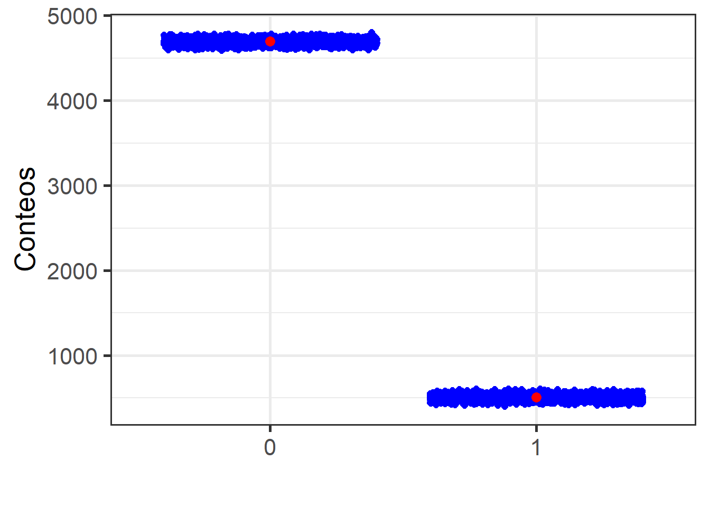
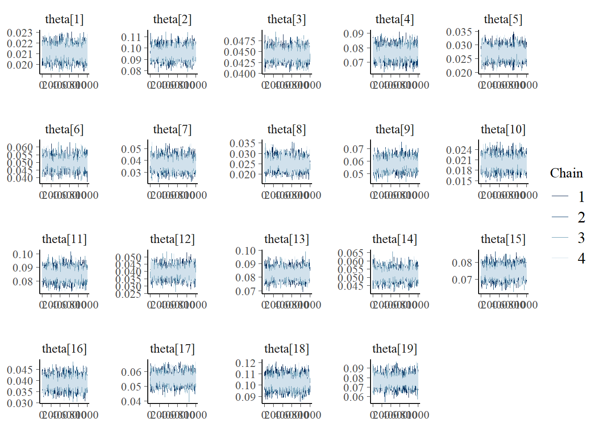
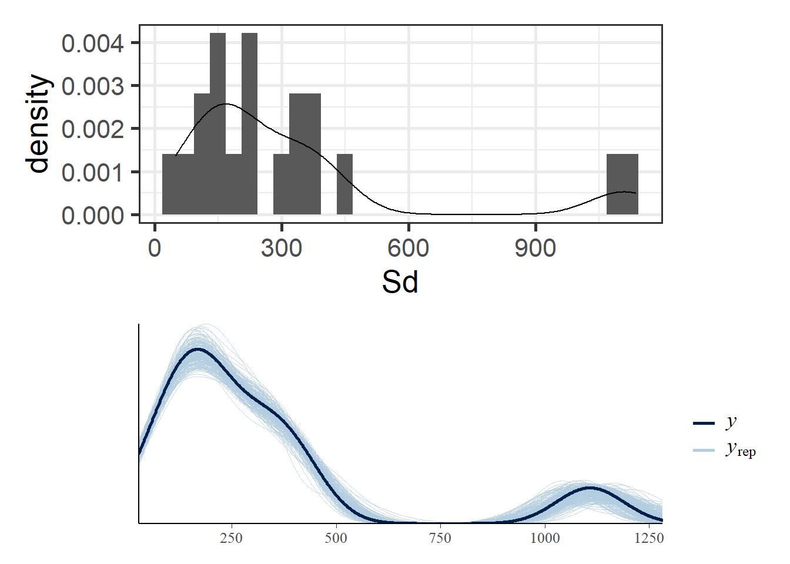
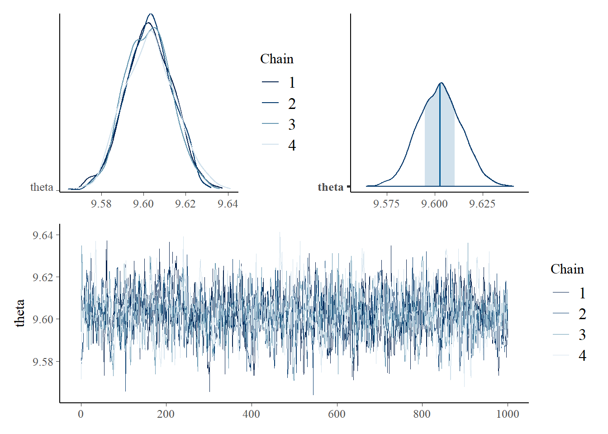
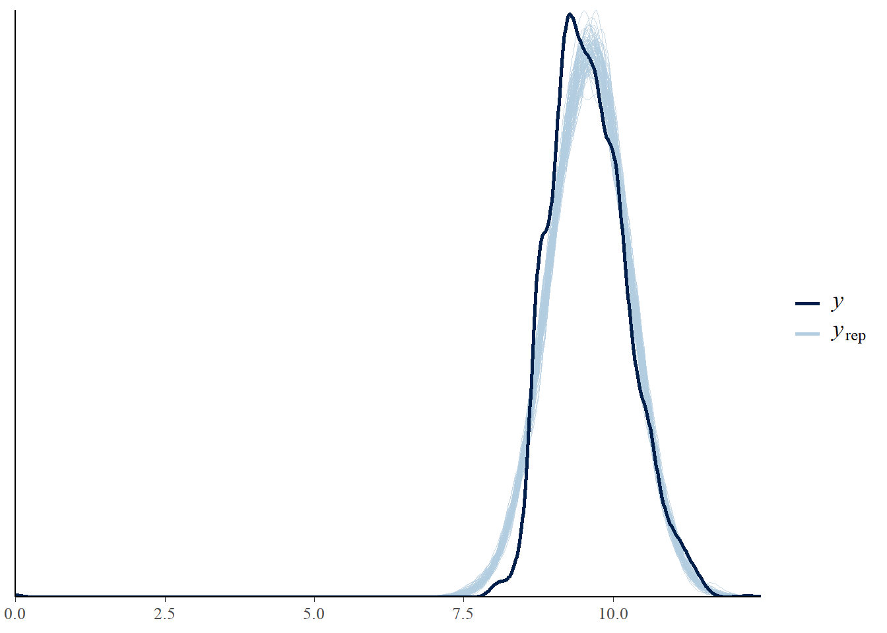
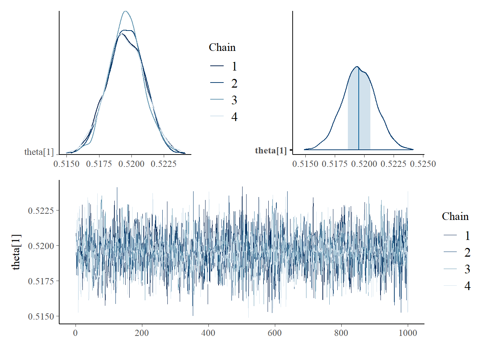
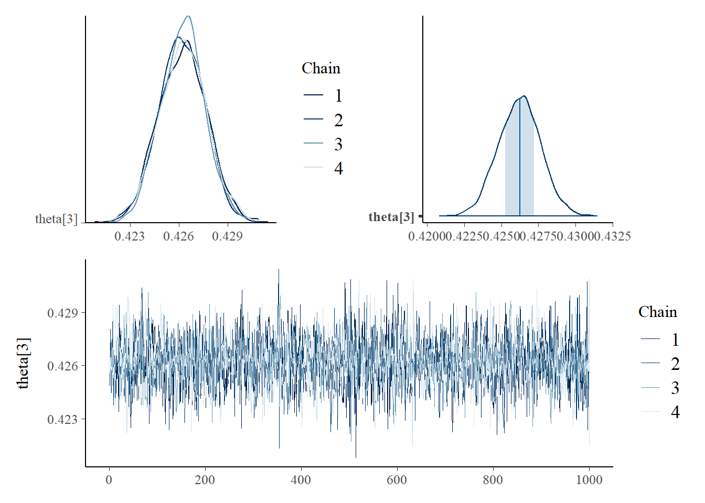

library(tidyverse)
encuesta <- readRDS("../Data/encuestaURY20N.rds") Fundamentos de la inferencia Bayesiana en R y STAN
CEPAL - División de Estadísticas Sociales
Regla de Bayes
En términos de inferencia para \(\boldsymbol{\theta}\), es necesario encontrar la distribución de los parámetros condicionada a la observación de los datos. Para este fin, es necesario definir la distribución conjunta de la variable de interés con el vector de parámetros.
\[ p(\boldsymbol{\theta},\mathbf{Y})=p(\boldsymbol{\theta})p(\mathbf{Y} \mid \boldsymbol{\theta}) \]
La distribución \(p(\boldsymbol{\theta})\) se le conoce con el nombre de distribución previa.
El término \(p(\mathbf{Y} \mid \boldsymbol{\theta})\) es la distribución de muestreo, verosimilitud o distribución de los datos.
La distribución del vector de parámetros condicionada a los datos observados está dada por
\[ p(\boldsymbol{\theta} \mid \mathbf{Y})=\frac{p(\boldsymbol{\theta},\mathbf{Y})}{p(\mathbf{Y})}=\frac{p(\boldsymbol{\theta})p(\mathbf{Y} \mid \boldsymbol{\theta})}{p(\mathbf{Y})} \]
A la distribución \(p(\boldsymbol{\theta} \mid \mathbf{Y})\) se le conoce con el nombre de distribución posterior. Nótese que el denominador no depende del vector de parámetros y considerando a los datos observados como fijos, corresponde a una constante y puede ser obviada. Por lo tanto, otra representación de la regla de Bayes está dada por
\[ p(\boldsymbol{\theta} \mid \mathbf{Y})\propto p(\mathbf{Y} \mid \boldsymbol{\theta})p(\boldsymbol{\theta}) \]
Inferencia Bayesiana.
En términos de estimación, inferencia y predicción, el enfoque Bayesiano supone dos momentos o etapas:
- Antes de la recolección de las datos, en donde el investigador propone, basado en su conocimiento, experiencia o fuentes externas, una distribución de probabilidad previa para el parámetro de interés.
- Después de la recolección de los datos. Siguiendo el teorema de Bayes, el investigador actualiza su conocimiento acerca del comportamiento probabilístico del parámetro de interés mediante la distribución posterior de este.
Modelos uniparamétricos
Los modelos que están definidos en términos de un solo parámetro que pertenece al conjunto de los números reales se definen como modelos uniparamétricos.
Modelo Bernoulli
Suponga que \(Y\) es una variable aleatoria con distribución Bernoulli dada por:
\[ p(Y \mid \theta)=\theta^y(1-\theta)^{1-y}I_{\{0,1\}}(y) \]
Como el parámetro \(\theta\) está restringido al espacio \(\Theta=[0,1]\), entonces es posible formular varias opciones para la distribución previa del parámetro. En particular, la distribución uniforme restringida al intervalo \([0,1]\) o la distribución Beta parecen ser buenas opciones. Puesto que la distribución uniforme es un caso particular de la distribución Beta. Por lo tanto la distribución previa del parámetro \(\theta\) estará dada por
\[ \begin{equation} p(\theta \mid \alpha,\beta)= \frac{1}{Beta(\alpha,\beta)}\theta^{\alpha-1}(1-\theta)^{\beta-1}I_{[0,1]}(\theta). \end{equation} \]
y la distribución posterior del parámetro \(\theta\) sigue una distribución
\[ \begin{equation*} \theta \mid Y \sim Beta(y+\alpha,\beta-y+1) \end{equation*} \]
Cuando se tiene una muestra aleatoria \(Y_1,\ldots,Y_n\) de variables con distribución Bernoulli de parámetro \(\theta\), entonces la distribución posterior del parámetro de interés es
\[ \begin{equation*} \theta \mid Y_1,\ldots,Y_n \sim Beta\left(\sum_{i=1}^ny_i+\alpha,\beta-\sum_{i=1}^ny_i+n\right) \end{equation*} \]
Práctica en R
- ENCUESTA CONTINUA DE HOGARES (ECH) 2020
En el contexto de emergencia sanitaria, a partir del mes de abril de 2020 la ECH se comenzó a aplicar mediante la modalidad panel rotativo y pasó a realizarse de forma telefónica desde el hogar de cada entrevistador, con el fin de reducir la movilidad. Se utilizó un formulario reducido con el objetivo de recoger la información necesaria para estimar los principales indicadores de mercado de trabajo e ingresos de los hogares y de las personas
Sea \(Y\) la variable aleatoria
\[ Y_{i}=\begin{cases} 1 & ingreso<lp\\ 0 & ingreso\geq lp \end{cases} \]
El tamaño de la muestra es de 5202 Afrodescendiente.
datay <- encuesta %>% filter(etnia_ee == 2) %>%
transmute(y = ifelse(ingcorte < lp, 1,0))
addmargins(table(datay$y))| 0 | 1 | Sum |
|---|---|---|
| 4696 | 506 | 5202 |
Un grupo de estadístico experto decide utilizar una distribución previa Beta, definiendo los parámetros de la distribución previa como \(Beta(\alpha=1, \beta=1)\). La distribución posterior del parámetro de interés, que representa la probabilidad de estar por debajo de la linea de pobreza, es \(Beta(506 + 1, 1 - 506 + 5202)=Beta(507, 4697)\)
La estimación del parámetro estaría dado por:
\[ E(X) = \frac{\alpha}{\alpha + \beta} = \frac{507}{507+ 4697} = 0.0974251 \]
luego, el intervalo de credibilidad para la distribución posterior es.
n = length(datay$y)
n1 = sum(datay$y)
qbeta(c(0.025, 0.975),
shape1 = 1 + n1,
shape2 = 1 - n1 + n)[1] 0.0895170 0.1056262Práctica en STAN
En STAN es posible obtener el mismo tipo de inferencia creando cuatro cadenas cuya distribución de probabilidad coincide con la distribución posterior del ejemplo.
## Definir el modelo
data { // Entrada el modelo
int<lower=0> n; // Numero de observaciones
int y[n]; // Vector de longitud n
real a;
real b;
}
parameters { // Definir parámetro
real<lower=0, upper=1> theta;
}
model { // Definir modelo
y ~ bernoulli(theta);
theta ~ beta(a, b); // Distribución previa
}
generated quantities {
real ypred[n]; // vector de longitud n
for (ii in 1:n){
ypred[ii] = bernoulli_rng(theta);
}
}Para compilar STAN debemos definir los parámetros de entrada
sample_data <- list(n = nrow(datay),
y = datay$y,
a = 1,
b = 1)Para ejecutar STAN en R tenemos la librería cmdstanr
library(cmdstanr)
Bernoulli <- cmdstan_model(stan_file = "../Data/modelosStan/Bernoulli.stan") model_Bernoulli <- Bernoulli$sample(data = sample_data,
chains = 4,
parallel_chains = 4,
seed = 1234,
refresh = 0)Running MCMC with 4 parallel chains...
Chain 1 finished in 8.9 seconds.
Chain 2 finished in 8.9 seconds.
Chain 3 finished in 9.0 seconds.
Chain 4 finished in 9.0 seconds.
All 4 chains finished successfully.
Mean chain execution time: 9.0 seconds.
Total execution time: 9.3 seconds.La estimación del parámetro \(\theta\) es:
model_Bernoulli$summary(variables = "theta")| variable | mean | median | sd | mad | q5 | q95 | rhat | ess_bulk | ess_tail |
|---|---|---|---|---|---|---|---|---|---|
| theta | 0.0972259 | 0.097179 | 0.0041696 | 0.0042803 | 0.0905589 | 0.1042521 | 1.001628 | 1513.439 | 1743.771 |
Para observar las cadenas compilamos las lineas de código
library(posterior)
library(ggplot2)
temp <- as_draws_df(model_Bernoulli$draws(variables = "theta"))
ggplot(data = temp, aes(x = theta))+
geom_density(color = "blue", size = 2) +
stat_function(fun = posterior1,
args = list(y = datay$y),
size = 2) +
theme_bw(base_size = 20) +
labs(x = latex2exp::TeX("\\theta"),
y = latex2exp::TeX("f(\\theta)"))Para validar las cadenas
library(bayesplot)
(mcmc_dens_chains(model_Bernoulli$draws("theta")) +
mcmc_areas(model_Bernoulli$draws("theta")))/
mcmc_trace(model_Bernoulli$draws("theta")) Predicción de \(Y\) en cada una de las iteraciones de las cadenas.
n <- nrow(datay)
temp <- model_Bernoulli$draws(variables = "ypred", format = "df")
temp <- apply(temp, 1,
function(x){data.frame(
(
table(as.numeric(x[1:n]))))}) %>%
bind_rows()
ggplot(data = temp, aes(x = Var1, y = Freq))+
geom_jitter(color = "blue", size = 2) +
geom_point(data = data.frame((table(datay$y))),
size = 3, color = "red")+
theme_bw(20) +
labs(y = "Conteos", x = "")
y_pred_B <- model_Bernoulli$draws(variables = "ypred", format = "matrix")
rowsrandom <- sample(nrow(y_pred_B), 100)
y_pred2 <- y_pred_B[rowsrandom, 1:n]
ppc_dens_overlay(y = datay$y, y_pred2) Modelo Binomial
Cuando se dispone de una muestra aleatoria de variables con distribución Bernoulli \(Y_1,\ldots,Y_n\), la inferencia Bayesiana se puede llevar a cabo usando la distribución Binomial, puesto que es bien sabido que la suma de variables aleatorias Bernoulli
\[ \begin{equation*} S=\sum_{i=1}^nY_i \end{equation*} \]
sigue una distribución Binomial. Es decir:
\[ \begin{equation} p(S \mid \theta)=\binom{n}{s}\theta^s(1-\theta)^{n-s}I_{\{0,1,\ldots,n\}}(s), \end{equation} \]
Nótese que la distribución Binomial es un caso general para la distribución Bernoulli, cuando \(n=1\). Por lo tanto es natural suponer que distribución previa del parámetro \(\theta\) estará dada por
\[ \begin{equation} p(\theta \mid \alpha,\beta)= \frac{1}{Beta(\alpha,\beta)}\theta^{\alpha-1}(1-\theta)^{\beta-1}I_{[0,1]}(\theta). \end{equation} \]
La distribución posterior del parámetro \(\theta\) sigue una distribución
\[ \begin{equation*} \theta \mid S \sim Beta(s+\alpha,\beta-s+n) \end{equation*} \]
Práctica en STAN
Sea \(S\) el conteo de las personas en condición de pobreza en el país.
(dataS <- encuesta %>%
transmute(y = ifelse(ingcorte < lp, 1, 0)) %>%
summarise(n = n(), #Número de ensayos
S = sum(y) #Número de éxito
))| n | S |
|---|---|
| 145166 | 6029 |
Creando código de STAN
data {
int<lower=0> n; // Número de ensayos
int<lower=0> s; // Número de éxitos
real a;
real b;
}
parameters {
real<lower=0, upper=1> theta;
}
model {
s ~ binomial(n, theta);
theta ~ beta(a, b);
}
generated quantities {
real spred; // vector de longitud D
spred = binomial_rng(n, theta);
}Preparando el código de STAN
## Definir el modelo
Binomial <- cmdstan_model(stan_file = "../Data/modelosStan/Binomial.stan") Organizando datos para STAN
sample_data <- list(s = dataS$S,
n = dataS$n,
a = 1,
b = 1)Para ejecutar STAN en R tenemos la librería cmdstanr
model_Binomial <- Binomial$sample(data = sample_data,
chains = 4,
parallel_chains = 4,
seed = 1234,
refresh = 0)Running MCMC with 4 parallel chains...
Chain 1 finished in 0.1 seconds.
Chain 2 finished in 0.1 seconds.
Chain 3 finished in 0.1 seconds.
Chain 4 finished in 0.1 seconds.
All 4 chains finished successfully.
Mean chain execution time: 0.1 seconds.
Total execution time: 0.6 seconds.La estimación del parámetro \(\theta\) es:
model_Binomial$summary(variables = "theta")| variable | mean | median | sd | mad | q5 | q95 | rhat | ess_bulk | ess_tail |
|---|---|---|---|---|---|---|---|---|---|
| theta | 0.0415253 | 0.0415214 | 0.0005186 | 0.000513 | 0.0406706 | 0.042383 | 1.003387 | 1413.948 | 2139.082 |
Para observar las cadenas compilamos las lineas de código
temp <- model_Binomial$draws(variables = "theta", format = "df")
ggplot(data = temp, aes(x = theta))+
geom_density(color = "blue", size = 2) +
stat_function(fun = dbeta,
args = list(
shape1 = 1 + dataS$S,
shape2 = 1 - dataS$S + dataS$n
),
size = 1) +
theme_bw(base_size = 20) +
labs(x = latex2exp::TeX("\\theta"),
y = latex2exp::TeX("p(\\theta)"))Para validar las cadenas
(mcmc_dens_chains(model_Binomial$draws("theta")) +
mcmc_areas(model_Binomial$draws("theta")))/
mcmc_trace(model_Binomial$draws("theta")) mcmc_trace(model_Binomial$draws("spred"))Cuando se tiene una sucesión de variables aleatorias \(S_1,\ldots,S_i, \ldots,S_k\) independientes y con distribución \(Binomial(n_i,\theta)\) para \(i=1,\ldots,k\), entonces la distribución posterior del parámetro de interés \(\theta\) es
\[ \begin{equation*} \theta \mid S_1,\ldots,S_k \sim Beta\left(\sum_{i=1}^ks_i+\alpha,\beta+\sum_{i=1}^k n_i-\sum_{i=1}^k s_i\right) \end{equation*} \]
Práctica en STAN
Sea \(S_k\) el conteo de personas en condición de pobreza en el \(k-ésimo\) departamento en la muestra.
(dataS <- encuesta %>%
transmute(
depto = str_pad(
string = dpto,
pad = "0",
width = 2
),
y = ifelse(ingcorte < lp, 1,0)
) %>% group_by(depto) %>%
summarise(nd = n(), #Número de ensayos
Sd = sum(y) #Número de éxito
))| depto | nd | Sd |
|---|---|---|
| 01 | 53769 | 1136 |
| 02 | 3398 | 324 |
| 03 | 24316 | 1080 |
| 04 | 3972 | 302 |
| 05 | 5740 | 154 |
| 06 | 3171 | 156 |
| 07 | 1357 | 49 |
| 08 | 3271 | 81 |
| 09 | 2717 | 156 |
| 10 | 6389 | 127 |
| 11 | 4589 | 388 |
| 12 | 2609 | 102 |
| 13 | 4696 | 387 |
| 14 | 4472 | 230 |
| 15 | 5866 | 434 |
| 16 | 5511 | 214 |
| 17 | 3846 | 210 |
| 18 | 3164 | 323 |
| 19 | 2313 | 176 |
Creando código de STAN
data {
int<lower=0> K; // Número de provincia
int<lower=0> n[K]; // Número de ensayos
int<lower=0> s[K]; // Número de éxitos
real a;
real b;
}
parameters {
real<lower=0, upper=1> theta[K]; // theta_d|sd
}
model {
for(kk in 1:K) {
s[kk] ~ binomial(n[kk], theta[kk]);
}
to_vector(theta) ~ beta(a, b);
}
generated quantities {
real spred[K]; // vector de longitud K
for(kk in 1:K){
spred[kk] = binomial_rng(n[kk],theta[kk]);
}
}Preparando el código de STAN
## Definir el modelo
Binomial2 <- cmdstan_model(stan_file = "../Data/modelosStan/Binomial3.stan") Organizando datos para STAN
sample_data <- list(K = nrow(dataS),
s = dataS$Sd,
n = dataS$nd,
a = 1,
b = 1)Para ejecutar STAN en R tenemos la librería cmdstanr
model_Binomial2 <- Binomial2$sample(data = sample_data,
chains = 4,
parallel_chains = 4,
seed = 1234,
refresh = 0)Running MCMC with 4 parallel chains...
Chain 1 finished in 0.5 seconds.
Chain 2 finished in 0.5 seconds.
Chain 3 finished in 0.5 seconds.
Chain 4 finished in 0.5 seconds.
All 4 chains finished successfully.
Mean chain execution time: 0.5 seconds.
Total execution time: 0.8 seconds.La estimación del parámetro \(\theta\) es:
model_Binomial2$summary(variables = "theta") %>%
data.frame()| variable | mean | median | sd | mad | q5 | q95 | rhat | ess_bulk | ess_tail |
|---|---|---|---|---|---|---|---|---|---|
| theta[1] | 0.0211475 | 0.0211478 | 0.0006135 | 0.0006110 | 0.0201192 | 0.0221728 | 1.0010718 | 8991.343 | 3005.480 |
| theta[2] | 0.0956163 | 0.0955578 | 0.0049754 | 0.0049382 | 0.0876278 | 0.1040466 | 1.0024187 | 8237.999 | 2854.992 |
| theta[3] | 0.0444422 | 0.0444339 | 0.0013148 | 0.0013290 | 0.0423383 | 0.0466121 | 1.0002390 | 9822.944 | 2806.860 |
| theta[4] | 0.0763038 | 0.0762934 | 0.0041347 | 0.0041610 | 0.0696027 | 0.0831386 | 1.0023397 | 7940.669 | 2526.299 |
| theta[5] | 0.0270097 | 0.0269182 | 0.0021632 | 0.0021845 | 0.0235896 | 0.0306911 | 0.9998387 | 7719.085 | 3118.334 |
| theta[6] | 0.0494782 | 0.0494407 | 0.0037161 | 0.0036661 | 0.0435300 | 0.0557164 | 1.0016953 | 8067.498 | 2946.968 |
| theta[7] | 0.0367995 | 0.0365605 | 0.0049596 | 0.0049280 | 0.0290284 | 0.0453117 | 1.0049740 | 7906.439 | 3133.499 |
| theta[8] | 0.0250245 | 0.0249330 | 0.0027550 | 0.0027802 | 0.0207840 | 0.0297958 | 0.9997127 | 9833.492 | 3094.255 |
| theta[9] | 0.0577178 | 0.0576152 | 0.0043781 | 0.0043886 | 0.0506339 | 0.0650664 | 1.0041113 | 8079.377 | 2854.314 |
| theta[10] | 0.0200494 | 0.0199892 | 0.0017837 | 0.0017860 | 0.0172287 | 0.0230196 | 0.9998162 | 9937.079 | 2602.447 |
| theta[11] | 0.0847971 | 0.0847228 | 0.0042208 | 0.0041729 | 0.0779882 | 0.0918681 | 0.9999788 | 8161.487 | 3001.114 |
| theta[12] | 0.0394645 | 0.0393029 | 0.0037432 | 0.0037446 | 0.0335098 | 0.0456850 | 1.0012642 | 10197.825 | 2935.597 |
| theta[13] | 0.0825580 | 0.0825230 | 0.0039179 | 0.0039700 | 0.0761877 | 0.0891326 | 1.0026816 | 8533.602 | 2963.651 |
| theta[14] | 0.0516401 | 0.0515242 | 0.0032765 | 0.0032643 | 0.0464203 | 0.0571448 | 1.0046025 | 8271.649 | 3099.786 |
| theta[15] | 0.0741256 | 0.0741230 | 0.0034257 | 0.0034124 | 0.0684806 | 0.0797002 | 1.0012649 | 8236.877 | 2527.760 |
| theta[16] | 0.0389944 | 0.0389676 | 0.0025941 | 0.0025752 | 0.0347446 | 0.0432665 | 1.0022042 | 9480.121 | 3054.889 |
| theta[17] | 0.0548643 | 0.0547642 | 0.0036644 | 0.0036451 | 0.0489028 | 0.0611118 | 1.0005468 | 9060.673 | 2897.893 |
| theta[18] | 0.1022875 | 0.1022675 | 0.0053558 | 0.0053004 | 0.0936240 | 0.1113094 | 1.0008910 | 9364.326 | 3176.635 |
| theta[19] | 0.0764430 | 0.0763034 | 0.0057345 | 0.0054736 | 0.0671893 | 0.0862732 | 1.0005071 | 8281.548 | 2602.826 |
Para validar las cadenas
mcmc_areas(model_Binomial2$draws("theta"))mcmc_trace(model_Binomial2$draws("theta")) 
y_pred_B <- model_Binomial2$draws(variables = "spred", format = "matrix")
rowsrandom <- sample(nrow(y_pred_B), 200)
y_pred2 <- y_pred_B[rowsrandom, ]
g1 <- ggplot(data = dataS, aes(x = Sd))+
geom_histogram(aes(y = ..density..)) +
geom_density() +theme_bw(20)
g2 <- ppc_dens_overlay(y = dataS$Sd, y_pred2)
g1/g2
Modelo Normal con media desconocida
Suponga que \(Y_1,\cdots,Y_n\) son variables independientes e idénticamente distribuidos con distribución \(Normal(\theta,\sigma^2)\) con \(\theta\) desconocido pero \(\sigma^2\) conocido. De esta forma, la función de verosimilitud de los datos está dada por
\[ \begin{align*} p(\mathbf{Y} \mid \theta) &=\prod_{i=1}^n\frac{1}{\sqrt{2\pi\sigma^2}}\exp\left\{-\frac{1}{2\sigma^2}(y_i-\theta)^2\right\}I_\mathbb{R}(y) \\ &=(2\pi\sigma^2)^{-n/2}\exp\left\{-\frac{1}{2\sigma^2}\sum_{i=1}^n(y_i-\theta)^2\right\} \end{align*} \]
Como el parámetro \(\theta\) puede tomar cualquier valor en los reales, es posible asignarle una distribución previa \(\theta \sim Normal(\mu,\tau^2)\). Bajo este marco de referencia se tienen los siguientes resultados
La distribución posterior del parámetro de interés \(\theta\) sigue una distribución
\[ \begin{equation*} \theta|\mathbf{Y} \sim Normal(\mu_n,\tau^2_n) \end{equation*} \]
En donde
\[ \begin{equation} \mu_n=\frac{\frac{n}{\sigma^2}\bar{Y}+\frac{1}{\tau^2}\mu}{\frac{n}{\sigma^2}+\frac{1}{\tau^2}} \ \ \ \ \ \ \ \text{y} \ \ \ \ \ \ \ \tau_n^2=\left(\frac{n}{\sigma^2}+\frac{1}{\tau^2}\right)^{-1} \end{equation} \]
Práctica en STAN
Sea \(Y\) el logaritmo del ingreso
dataNormal <- encuesta %>%
transmute(
depto = str_pad(
string = dpto,
pad = "0",
width = 2
),
logIngreso = log(ingcorte +1)) %>%
filter(depto == "02")
(media <- mean(dataNormal$logIngreso))[1] 9.602769(Sd <- sd(dataNormal$logIngreso))[1] 0.6685092ggplot(dataNormal,aes(x = logIngreso))+
geom_density(size =2, color = "blue") +
stat_function(fun =dnorm,
args = list(mean = media, sd = Sd),
size =2) +
theme_bw(base_size = 20)
Creando código de STAN
data {
int<lower=0> n; // Número de observaciones
real y[n]; // LogIngreso
real <lower=0> Sigma; // Desviación estándar
}
parameters {
real theta;
}
model {
y ~ normal(theta, Sigma);
theta ~ normal(0, 1000); // distribución previa
}
generated quantities {
real ypred[n]; // vector de longitud D
for(kk in 1:n){
ypred[kk] = normal_rng(theta,Sigma);
}
}Preparando el código de STAN
NormalMedia <- cmdstan_model(stan_file = "../Data/modelosStan/NormalMedia.stan") Organizando datos para STAN
sample_data <- list(n = nrow(dataNormal),
Sigma = sd(dataNormal$logIngreso),
y = dataNormal$logIngreso)Para ejecutar STAN en R tenemos la librería cmdstanr
model_NormalMedia <- NormalMedia$sample(data = sample_data,
chains = 4,
parallel_chains = 4,
seed = 1234,
refresh = 0
)Running MCMC with 4 parallel chains...
Chain 1 finished in 8.3 seconds.
Chain 2 finished in 8.3 seconds.
Chain 3 finished in 8.2 seconds.
The remaining chains had a mean execution time of 8.5 seconds.La estimación del parámetro \(\theta\) es:
model_NormalMedia$summary(variables = "theta")| variable | mean | median | sd | mad | q5 | q95 | rhat | ess_bulk | ess_tail |
|---|---|---|---|---|---|---|---|---|---|
| theta | 9.602474 | 9.602545 | 0.0110945 | 0.0112307 | 9.58456 | 9.62074 | 1.00059 | 1147.636 | 1208.572 |
(mcmc_dens_chains(model_NormalMedia$draws("theta")) +
mcmc_areas(model_NormalMedia$draws("theta")))/
mcmc_trace(model_NormalMedia$draws("theta")) 
y_pred_B <- model_NormalMedia$draws(variables = "ypred", format = "matrix")
rowsrandom <- sample(nrow(y_pred_B), 100)
y_pred2 <- y_pred_B[rowsrandom, ]
ppc_dens_overlay(y = as.numeric(dataNormal$logIngreso), y_pred2)
Modelos multiparamétricos
- La distribución normal univariada que tiene dos parámetros: la media \(\theta\) y la varianza \(\sigma^2\).
- La distribución multinomial cuyo parámetro es un vector de probabilidades \(\boldsymbol{\theta}\).
Modelo Normal con media y varianza desconocida
Supongamos que se dispone de realizaciones de un conjunto de variables independientes e idénticamente distribuidas \(Y_1,\cdots,Y_n\sim N(\theta,\sigma^2)\). Cuando se desconoce tanto la media como la varianza de la distribución es necesario plantear diversos enfoques y situarse en el más conveniente, según el contexto del problema. En términos de la asignación de las distribuciones previas para \(\theta\) y \(\sigma^2\) es posible:
- Suponer que la distribución previa \(p(\theta)\) es independiente de la distribución previa \(p(\sigma^2)\) y que ambas distribuciones son informativas.
- Suponer que la distribución previa \(p(\theta)\) es independiente de la distribución previa \(p(\sigma^2)\) y que ambas distribuciones son no informativas.
- Suponer que la distribución previa para \(\theta\) depende de \(\sigma^2\) y escribirla como \(p(\theta \mid \sigma^2)\), mientras que la distribución previa de \(\sigma^2\) no depende de \(\theta\) y se puede escribir como \(p(\sigma^2)\).
Parámetros independientes
La distribución previa para el parámetro \(\theta\) será
\[ \begin{equation*} \theta \sim Normal(\mu,\tau^2) \end{equation*} \]
Y la distribución previa para el parámetro \(\sigma^2\) será
\[ \begin{equation*} \sigma^2 \sim Inversa-Gamma(n_0/2,n_0\sigma^2_0/2) \end{equation*} \]
Asumiendo independencia previa, la distribución previa conjunta estará dada por
\[ \begin{equation} p(\theta,\sigma^2)\propto (\sigma^2)^{-n_0/2-1}\exp\left\{-\dfrac{n_0\sigma^2_0}{2\sigma^2}\right\} \exp\left\{-\frac{1}{2\tau^2}(\theta-\mu)^2\right\} \end{equation} \]
La distribución posterior conjunta de los parámetros de interés está dada por
\[ \begin{align} p(\theta,\sigma^2 \mid \mathbf{Y})&\propto (\sigma^2)^{-(n+n_0)/2-1} \notag \\ &\times \exp\left\{-\frac{1}{2\sigma^2}\left[n_0\sigma^2_0+(n-1)S^2+n(\bar{y}-\theta)^2\right]-\frac{1}{2\tau^2}(\theta-\mu)^2\right\} \end{align} \]
La distribución posterior condicional de \(\theta\) es
\[ \begin{equation} \theta \mid \sigma^2,\mathbf{Y} \sim Normal(\mu_n,\tau_n^2) \end{equation} \]
En donde las expresiones para \(\mu_n\) y \(\tau_n^2\) están dados previamente. Por otro lado, la distribución posterior condicional de \(\sigma^2\) es
\[ \begin{equation} \sigma^2 \mid \theta,\mathbf{Y} \sim Inversa-Gamma\left(\dfrac{n_0+n}{2},\dfrac{v_0}{2}\right) \end{equation} \]
con \(v_0=n_0\sigma^2_0+(n-1)S^2+n(\bar{y}-\theta)^2\).
Práctica en STAN
Sea \(Y\) el logaritmo del ingreso
dataNormal <- encuesta %>%
transmute(
depto = str_pad(
string = dpto,
pad = "0",
width = 2
),
logIngreso = log(ingcorte +1)) %>%
filter(depto == "02")Creando código de STAN
data {
int<lower=0> n;
real y[n];
}
parameters {
real sigma;
real theta;
}
transformed parameters {
real sigma2;
sigma2 = pow(sigma, 2);
}
model {
y ~ normal(theta, sigma);
theta ~ normal(0, 1000);
sigma2 ~ inv_gamma(0.001, 0.001);
}
generated quantities {
real ypred[n]; // vector de longitud n
for(kk in 1:n){
ypred[kk] = normal_rng(theta,sigma);
}
}Preparando el código de STAN
NormalMeanVar <- cmdstan_model(stan_file = "../Data/modelosStan/NormalMeanVar.stan") Organizando datos para STAN
sample_data <- list(n = nrow(dataNormal),
y = dataNormal$logIngreso)Para ejecutar STAN en R tenemos la librería cmdstanr
model_NormalMedia <- NormalMeanVar$sample(data = sample_data,
chains = 4,
parallel_chains = 4,
seed = 1234,
refresh = 0)Running MCMC with 4 parallel chains...
Chain 1 finished in 9.2 seconds.
Chain 2 finished in 9.2 seconds.
Chain 4 finished in 9.2 seconds.
Chain 3 finished in 9.4 seconds.
All 4 chains finished successfully.
Mean chain execution time: 9.2 seconds.
Total execution time: 9.6 seconds.La estimación del parámetro \(\theta\) es:
model_NormalMedia$summary(variables = c("theta", "sigma", "sigma2"))| variable | mean | median | sd | mad | q5 | q95 | rhat | ess_bulk | ess_tail |
|---|---|---|---|---|---|---|---|---|---|
| theta | 9.6026857 | 9.6026250 | 0.0114716 | 0.0114086 | 9.5842095 | 9.6220310 | 1.001454 | 3549.443 | 2292.479 |
| sigma | 0.6684389 | 0.6682630 | 0.0079631 | 0.0079304 | 0.6554374 | 0.6815865 | 1.000603 | 4119.728 | 2594.585 |
| sigma2 | 0.4468739 | 0.4465745 | 0.0106488 | 0.0106036 | 0.4295983 | 0.4645597 | 1.000616 | 4119.779 | 2594.585 |
(mcmc_dens_chains(model_NormalMedia$draws("theta")) +
mcmc_areas(model_NormalMedia$draws("theta")))/
mcmc_trace(model_NormalMedia$draws("theta")) (mcmc_dens_chains(model_NormalMedia$draws("sigma")) +
mcmc_areas(model_NormalMedia$draws("sigma")))/
mcmc_trace(model_NormalMedia$draws("sigma")) (mcmc_dens_chains(model_NormalMedia$draws("sigma2")) +
mcmc_areas(model_NormalMedia$draws("sigma2")))/
mcmc_trace(model_NormalMedia$draws("sigma2")) y_pred_B <- model_NormalMedia$draws(variables = "ypred", format = "matrix")
rowsrandom <- sample(nrow(y_pred_B), 100)
y_pred2 <- y_pred_B[rowsrandom, ]
ppc_dens_overlay(y = as.numeric(dataNormal$logIngreso), y_pred2)Modelo Multinomial
En esta sección discutimos el modelamiento bayesiano de datos provenientes de una distribución multinomial que corresponde a una extensión multivariada de la distribución binomial. Suponga que \(\textbf{Y}=(Y_1,\ldots,Y_p)'\) es un vector aleatorio con distribución multinomial, así, su distribución está parametrizada por el vector \(\boldsymbol{\theta}=(\theta_1,\ldots,\theta_p)'\) y está dada por la siguiente expresión
\[ \begin{equation} p(\mathbf{Y} \mid \boldsymbol{\theta})=\binom{n}{y_1,\ldots,y_p}\prod_{i=1}^p\theta_i^{y_i} \ \ \ \ \ \theta_i>0 \texttt{ , } \sum_{i=1}^py_i=n \texttt{ y } \sum_{i=1}^p\theta_i=1 \end{equation} \] Donde
\[ \begin{equation*} \binom{n}{y_1,\ldots,y_p}=\frac{n!}{y_1!\cdots y_p!}. \end{equation*} \]
Como cada parámetro \(\theta_i\) está restringido al espacio \(\Theta=[0,1]\), entonces es posible asignar a la distribución de Dirichlet como la distribución previa del vector de parámetros. Por lo tanto la distribución previa del vector de parámetros \(\boldsymbol{\theta}\), parametrizada por el vector de hiperparámetros \(\boldsymbol{\alpha}=(\alpha_1,\ldots,\alpha_p)'\), está dada por
\[ \begin{equation} p(\boldsymbol{\theta} \mid \boldsymbol{\alpha})=\frac{\Gamma(\alpha_1+\cdots+\alpha_p)}{\Gamma(\alpha_1)\cdots\Gamma(\alpha_p)} \prod_{i=1}^p\theta_i^{\alpha_i-1} \ \ \ \ \ \alpha_i>0 \texttt{ y } \sum_{i=1}^p\theta_i=1 \end{equation} \]
La distribución posterior del parámetro \(\boldsymbol{\theta}\) sigue una distribución \(Dirichlet(y_1+\alpha_1,\ldots,y_p+\alpha_p)\)
Práctica en STAN
Sea \(Y\) Condición de actividad laboral
(dataMult <- encuesta %>% filter(condact3>0) %>%
transmute(empleo = as_factor(condact3)) %>%
group_by(empleo) %>% tally())| empleo | n |
|---|---|
| Ocupado | 63750 |
| Desocupado | 6651 |
| Inactivo | 52292 |
Creando código de STAN
data {
int<lower=0> k; // Número de cátegoria
int y[k]; // Número de exitos
vector[k] alpha; // Parámetro de las distribción previa
}
parameters {
simplex[k] theta;
}
transformed parameters {
real delta;
delta = theta[1] + theta[2];
}
model {
y ~ multinomial(theta);
theta ~ dirichlet(alpha);
}
generated quantities {
int ypred[k];
ypred = multinomial_rng(theta, 100);
}Preparando el código de STAN
Multinom <- cmdstan_model(stan_file = "../Data/modelosStan/Multinom.stan") Organizando datos para STAN
sample_data <- list(k = nrow(dataMult),
y = dataMult$n,
alpha = c(0.5, 0.5, 0.5))Para ejecutar STAN en R tenemos la librería cmdstanr
model_Multinom <- Multinom$sample(data = sample_data,
chains = 4,
parallel_chains = 4,
seed = 1234,
refresh = 1000)Running MCMC with 4 parallel chains...
Chain 1 Iteration: 1 / 2000 [ 0%] (Warmup)
Chain 1 Iteration: 1000 / 2000 [ 50%] (Warmup)
Chain 1 Iteration: 1001 / 2000 [ 50%] (Sampling)
Chain 2 Iteration: 1 / 2000 [ 0%] (Warmup)
Chain 2 Iteration: 1000 / 2000 [ 50%] (Warmup)
Chain 2 Iteration: 1001 / 2000 [ 50%] (Sampling)
Chain 3 Iteration: 1 / 2000 [ 0%] (Warmup)
Chain 3 Iteration: 1000 / 2000 [ 50%] (Warmup)
Chain 3 Iteration: 1001 / 2000 [ 50%] (Sampling)
Chain 4 Iteration: 1 / 2000 [ 0%] (Warmup)
Chain 1 Iteration: 2000 / 2000 [100%] (Sampling)
Chain 1 finished in 0.2 seconds.
Chain 2 Iteration: 2000 / 2000 [100%] (Sampling)
Chain 2 finished in 0.2 seconds.
Chain 3 Iteration: 2000 / 2000 [100%] (Sampling)
Chain 3 finished in 0.2 seconds.
Chain 4 Iteration: 1000 / 2000 [ 50%] (Warmup)
Chain 4 Iteration: 1001 / 2000 [ 50%] (Sampling)
Chain 4 Iteration: 2000 / 2000 [100%] (Sampling)
Chain 4 finished in 0.2 seconds.
All 4 chains finished successfully.
Mean chain execution time: 0.2 seconds.
Total execution time: 0.7 seconds.La estimación del parámetro \(\theta\) es:
model_Multinom$summary(variables = c("delta", "theta"))| variable | mean | median | sd | mad | q5 | q95 | rhat | ess_bulk | ess_tail |
|---|---|---|---|---|---|---|---|---|---|
| delta | 0.5737803 | 0.5737545 | 0.0014298 | 0.0014396 | 0.5714854 | 0.5761112 | 1.0006260 | 3850.723 | 2672.423 |
| theta[1] | 0.5195775 | 0.5195560 | 0.0014272 | 0.0014188 | 0.5172583 | 0.5219301 | 1.0027898 | 3963.323 | 2579.436 |
| theta[2] | 0.0542027 | 0.0542132 | 0.0006362 | 0.0006286 | 0.0531518 | 0.0552507 | 0.9998995 | 3697.910 | 2525.304 |
| theta[3] | 0.4262197 | 0.4262455 | 0.0014298 | 0.0014396 | 0.4238889 | 0.4285146 | 1.0006287 | 3850.723 | 2672.423 |
(mcmc_dens_chains(model_Multinom$draws("theta[1]")) +
mcmc_areas(model_Multinom$draws("theta[1]")))/
mcmc_trace(model_Multinom$draws("theta[1]")) 
(mcmc_dens_chains(model_Multinom$draws("theta[2]")) +
mcmc_areas(model_Multinom$draws("theta[2]")))/
mcmc_trace(model_Multinom$draws("theta[2]")) (mcmc_dens_chains(model_Multinom$draws("theta[3]")) +
mcmc_areas(model_Multinom$draws("theta[3]")))/
mcmc_trace(model_Multinom$draws("theta[3]")) 
(mcmc_dens_chains(model_Multinom$draws("delta")) +
mcmc_areas(model_Multinom$draws("delta")))/
mcmc_trace(model_Multinom$draws("delta")) n <- nrow(dataMult)
y_pred_B <- model_Multinom$draws(variables = "ypred", format = "matrix")
rowsrandom <- sample(nrow(y_pred_B), 100)
y_pred2 <- y_pred_B[, 1:n]
ppc_dens_overlay(y = as.numeric(dataMult$n), y_pred2)